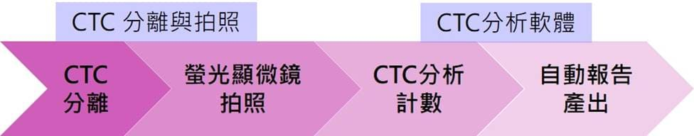
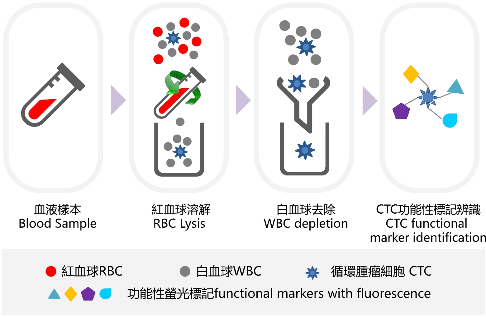

CTC-S
循環腫瘤細胞檢測項目代號
先確認送檢前的樣本條件與報告內容，再了解檢測流程與後續分析安排。
適合第一次接觸循環腫瘤細胞檢測的使用者，先掌握送檢前的基本要求。
循環腫瘤細胞（Circulating Tumor Cell, CTC）檢測。
人類全血，使用 K2-EDTA 紫頭採血管。
前 3mL 拋棄，4℃ 冷藏，低溫宅配並於 24 小時內上機。
提供 CTC 影像與數值、風險評估及歷史檢測數值分析。
流程區塊獨立呈現，方便快速辨識送檢之後會經歷的主要步驟。
確認採血條件與低溫配送時程，安排樣本送至實驗室。
去除紅血球及白血球，濃縮循環腫瘤細胞之純度。
以免疫螢光染色方法鑑定循環腫瘤細胞種類及數值。
分離的活細胞可進一步進行下游分析。
系統先利用滲透壓差異去除紅血球，再以專一性抗體辨認白血球，搭配 PowerMag 磁柱去除白血球；之後自動進行免疫螢光染色與顯微鏡拍攝，最後由影像計數系統判讀循環腫瘤細胞。



Chiline CATCH 自動檢測系統、試劑耗材套組與 CellMag / PowerMag 共同組成完整流程。